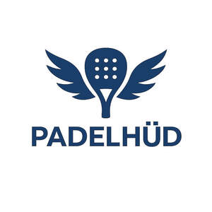
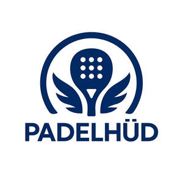

Trade Mark Journal No.2025/024 13 June 2025
UK00004209813 27 May 2025 (25,28)
Mark 1

Mark 2

- Class 25
- Clothing; Jackets [clothing]; Knitwear [clothing]; Ready-to-wear clothing; Woolen clothing; Headbands [clothing]; Headbands for clothing; Clothes; Maternity clothing; Jerseys [clothing]; Denims [clothing]; Shorts [clothing]; Cashmere clothing; Silk clothing; Parts of clothing, footwear and headgear; Hoods [clothing]; Windproof clothing; Wristbands [clothing]; Embroidered clothing; Rainproof clothing; Waterproof clothing; Bandeaux [clothing]; Casual clothing; Visors [clothing]; Jackets being sports clothing; Jackets (Stuff -) [clothing]; Clothing for leisure wear; Playsuits [clothing]; Bottoms [clothing]; Ready-made clothing; Woven clothing; Infant clothing; Leisure clothing; Athletic clothing; Clothing for sports; Sports clothing; Clothing for children; Bodies [clothing]; Tops [clothing]; Weatherproof clothing; Water-resistant clothing; Clothing for skiing; Beach clothing; Men's clothing; Dance clothing; Sports jerseys and breeches for sports; Footwear for sports; Sports footwear; Sports jerseys; Sports bras; Sports shoes; Sports singlets; Sports jackets; Sports shirts; Sports wear; Sports socks; Sports vests; Clothes for sports; Boots for sports; Sports garments; Sports caps; Articles of sports clothing; Footwear for sport; Footwear for use in sport; Moisture-wicking sports bras; Sports clothing [other than golf gloves]; Moisture-wicking sports shirts; Sport shirts; Sport coats; Sport stockings; Sports pants.
- Class 28
- Sports equipment; Balls for sports; Sports balls; Nets for sports; Tennis uprights [sports equipment]; Sports equipment for pets; Protective cups for sports; Tennis racquets; Tennis rackets; Rackets [for tennis]; Badminton racquets; Racket cases [for tennis or badminton]; Badminton rackets; Vibration dampeners for tennis rackets; Racketball rackets; Lawn tennis racquets; Lawn tennis rackets; Guts for rackets [for tennis or badminton]; Shuttlecocks for badminton; Badminton shuttlecocks; Gut for tennis rackets; Grip bands for tennis rackets; Tennis racket presses; Badminton equipment; Tennis balls; Grip bands for badminton rackets; Strings for tennis racquets; Tennis nets; Tennis net centre straps; Tennis racket covers; Racquet ball nets; Racquet ball gloves; Platform tennis balls; Tennis racket strings; Tennis ball retrievers; Platform tennis paddles; Balls for racket sports; Strings for badminton rackets; Soft tennis balls; Badminton nets; Nets for badminton; Shaped covers for tennis rackets; Racketball racket strings; Tennis uprights; Cases for tennis balls; Squash rackets; Paddles for playing platform tennis; Gloves for sports; Bags adapted for sporting articles; Tennis bags shaped to contain a racket.
Georgina Boeheim